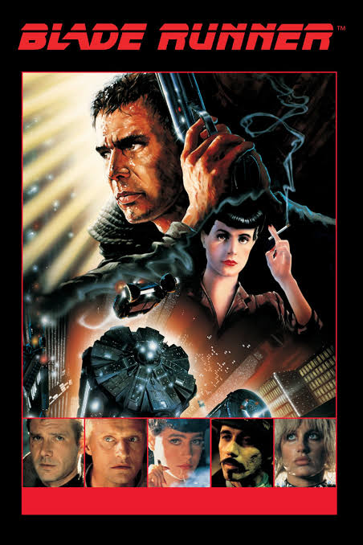

Blade Runner (1982)

Director: Ridley Scott | Runtime: 1h 57m | Rating: 8.1 / 10
Synopsis
Set in a rain-soaked Los Angeles of 2019, Rick Deckard (Harrison Ford) is a "blade runner" — a detective tasked with hunting down rogue Replicants, bio-engineered beings who have returned illegally to Earth.
Tracking a group led by Roy Batty (Rutger Hauer), Deckard becomes entangled with Rachael, a Replicant who doesn't know she isn't human. As the investigation deepens, the line between human and artificial begins to blur.
Key facts
| Director | Ridley Scott |
|---|---|
| Year | 1982 |
| Based on | "Do Androids Dream of Electric Sheep?" by Philip K. Dick |
| Composer | Vangelis |
| Versions released | 7 different cuts |
Why it matters
Blade Runner invented the visual language of cyberpunk — cramped neon-lit streets, acid rain, towering corporate arcologies. Every cyberpunk work since has borrowed from it.
"All those moments will be lost in time, like tears in rain."
— Roy Batty (Rutger Hauer), partly improvised on set